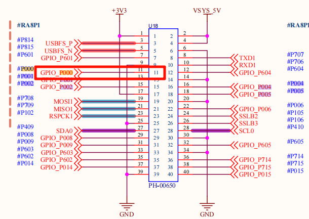

ADC Driver Example
Chinese | English
Introduction
This example demonstrates how to implement analog-to-digital conversion functionality for the RA8P1 microcontroller on Titan Board Mini using the RT-Thread ADC device driver framework. The project provides a comprehensive solution including ADC initialization, sampling, voltage conversion, and thread management.
Key Features
RA8P1 ADC Hardware Abstraction Layer - Complete 16-bit ADC driver support
RT-Thread Device Framework Integration - Standardized device management and control interfaces
Multi-threaded Concurrent Processing - Background thread for continuous sampling and data display
Real-time Voltage Conversion - Precise conversion from analog signals to digital signals
Low-power Design - Supports dynamic enable/disable of ADC channels
Command Line Interface - Quick sampling startup via
adc_samplecommand
1. Hardware Overview
1.1 RA8P1 Microcontroller Overview
RA8P1 is a high-performance ARM Cortex-M85 microcontroller from Renesas, designed for edge AI and real-time applications:
Core Architecture: ARM Cortex-M85 @ 1GHz (supports Helium MVE vector extension)
Coprocessor: ARM Cortex-M33 @ 250MHz (real-time control core)
Memory Configuration: 2MB SRAM (with ECC), supports TCM (Tightly Coupled Memory)
AI Acceleration: Built-in Ethos-U55 NPU, supports neural network inference
1.2 ADC Hardware Features
RA8P1 integrates an advanced analog-to-digital conversion subsystem:
1.2.1 ADC Core Parameters
Parameter |
Specification |
Description |
|---|---|---|
Resolution |
16-bit |
High-precision conversion, maximum 65536 quantization levels |
Sampling Rate |
Up to 23 channels |
Multi-channel synchronous sampling support |
Reference Voltage |
3.3V (330mV) |
Built-in high-precision voltage reference |
Data Interface |
16-bit parallel |
High-speed data transfer interface |
DMA Support |
8-channel DMA |
CPU-independent data acquisition |
1.2.2 ADC Electrical Characteristics
// Reference voltage configuration
#define REFER_VOLTAGE 330 // 3.30V × 100 (precision preserved to 2 decimal places)
#define CONVERT_BITS (1 << 16) // 16-bit resolution = 65536
// Voltage calculation formula
// Actual voltage(mV) = ADC reading × Reference voltage(mV) / Conversion bits
// Voltage(V) = (ADC reading × 3.3V) / 65536
1.2.3 ADC Channel Configuration
Channel Count: 23 analog input channels
Channel Selection: Dynamically configurable via software
Input Range: 0V ~ 3.3V unipolar input
Sample & Hold: Built-in sample-and-hold circuit
Trigger Modes: Software trigger, timer trigger, external event trigger
1.3 Hardware Connection Diagram

2. Software Architecture
2.1 RT-Thread ADC Driver Framework
RT-Thread provides a unified ADC device driver framework supporting multiple microcontroller platforms:
2.1.1 Device Management Interfaces
// ADC device management core interfaces
rt_err_t rt_adc_enable(rt_adc_device_t dev, rt_uint32_t channel); // Enable ADC channel
rt_err_t rt_adc_disable(rt_adc_device_t dev, rt_uint32_t channel); // Disable ADC channel
rt_uint32_t rt_adc_read(rt_adc_device_t dev, rt_uint32_t channel); // Read ADC value
2.1.2 Device Lifecycle
Device init → Device find → Device enable → Data sampling → Device disable → Resource release
↓ ↓ ↓ ↓ ↓ ↓
rt_device_init rt_device_find rt_adc_enable rt_adc_read rt_adc_disable rt_device_close
2.2 Project Software Architecture
Titan_Mini_driver_adc/
├── src/
│ └── hal_entry.c # Main entry file, contains ADC sampling logic
├── Kconfig # RT-Thread configuration
├── SConstruct # Build script
├── libraries/ # HAL library files
│ └── HAL_Drivers/ # Hardware abstraction layer drivers
└── rt-thread/ # RT-Thread kernel
└── components/
└── drivers/ # Device driver framework
2.2.1 Module Division
Module |
Function |
File Location |
|---|---|---|
Application Layer |
User interface and business logic |
|
Device Layer |
ADC device management |
|
Hardware Layer |
Low-level hardware drivers |
|
Configuration Layer |
System configuration |
|
2.3 Program Execution Flow
// Main program execution flow
void hal_entry(void) {
// 1. Initialize system
rt_kprintf("Hello RT-Thread!\n");
// 2. Configure LED indicator
rt_pin_mode(LED_PIN_R, PIN_MODE_OUTPUT);
// 3. Enter main loop (LED blinking)
while(1) {
rt_pin_write(LED_PIN_R, PIN_LOW);
rt_thread_mdelay(500);
rt_pin_write(LED_PIN_R, PIN_HIGH);
rt_thread_mdelay(500);
}
}
// ADC sampling thread startup
void adc_sample() {
// Create independent thread for ADC sampling
rt_thread_t adc_thread = rt_thread_create(
"adc", // Thread name
adc_vol_sample, // Thread entry function
RT_NULL, // Thread parameter
1024, // Thread stack size
10, // Priority
10 // Time slice
);
rt_thread_startup(adc_thread);
}
3. Usage Examples
3.1 Basic ADC Sampling
3.1.1 Device Initialization and Finding
// ADC device configuration constants
#define ADC_DEV_NAME "adc0" // ADC device name
#define ADC_DEV_CHANNEL 0 // ADC channel number
#define REFER_VOLTAGE 330 // Reference voltage (3.3V × 100)
#define CONVERT_BITS (1 << 16) // 16-bit resolution
// ADC device initialization function
int adc_vol_sample()
{
rt_adc_device_t adc_dev; // ADC device handle
rt_uint32_t value, vol; // ADC value and voltage value
rt_err_t ret = RT_EOK; // Return status code
// 1. Find ADC device
adc_dev = (rt_adc_device_t)rt_device_find(ADC_DEV_NAME);
if (adc_dev == RT_NULL)
{
rt_kprintf("adc sample run failed! can't find %s device!\n", ADC_DEV_NAME);
return RT_ERROR;
}
// 2. Enable ADC channel
ret = rt_adc_enable(adc_dev, ADC_DEV_CHANNEL);
if (ret != RT_EOK)
{
rt_kprintf("adc enable failed! ret = %d\n", ret);
return ret;
}
// 3. Enter sampling loop
while(1)
{
// 4. Read ADC raw value
value = rt_adc_read(adc_dev, ADC_DEV_CHANNEL);
rt_kprintf("the value is :%d \n", value);
// 5. Convert to voltage value (unit: mV)
vol = value * REFER_VOLTAGE / CONVERT_BITS;
rt_kprintf("the voltage is :%d.%02d \n", vol / 100, vol % 100);
// 6. Delay 1 second
rt_thread_mdelay(1000);
}
// 7. Disable ADC channel (theoretically will not reach here)
ret = rt_adc_disable(adc_dev, ADC_DEV_CHANNEL);
return ret;
}
3.1.2 Voltage Calculation Details
Voltage conversion uses fixed-point arithmetic to ensure precision:
// Raw ADC value range: 0 ~ 65535 (16-bit)
// Reference voltage: 3.3V = 330mV
// Conversion formula: Voltage(mV) = (ADC value × 330mV) / 65536
// Example calculation:
// When ADC reading is 32768 (half of full scale)
vol = 32768 * 330 / 65536;
// vol = 16500 mV = 1.65V
// Display formatted output:
// vol / 100 = 165 (integer part, volts)
// vol % 100 = 0 (decimal part, hundredths of volts)
// Output: "the voltage is :165.00"
3.2 Multi-threading Implementation
3.2.1 Thread Creation and Startup
// Create ADC sampling thread
void adc_sample()
{
rt_thread_t adc = rt_thread_create("adc", adc_vol_sample, RT_NULL, 1024, 10, 10);
// Start thread
if (adc != RT_NULL)
{
rt_thread_startup(adc);
rt_kprintf("ADC sampling thread started successfully!\n");
}
else
{
rt_kprintf("Failed to create ADC sampling thread!\n");
}
}
// Export as MSH command
MSH_CMD_EXPORT(adc_sample, adc_sample);
3.2.2 Thread Synchronization Mechanisms
RT-Thread provides rich thread synchronization mechanisms:
// Can add mutex to protect ADC device access
static rt_mutex_t adc_mutex = RT_NULL;
// Create mutex in ADC initialization
rt_mutex_init(&adc_mutex, "adc_mutex", RT_IPC_FLAG_FIFO);
// Use mutex in ADC sampling
rt_mutex_take(adc_mutex, RT_WAITING_FOREVER);
// Perform ADC operations
rt_mutex_release(adc_mutex);
3.3 Command Line Interface Usage
3.3.1 Terminal Commands
# 1. Probe if ADC device exists
msh >adc probe adc0
probe adc0 success
# 2. Start ADC sampling (command provided by this program)
msh >adc_sample
ADC sampling thread started successfully!
# 3. Use RT-Thread built-in commands to manage ADC
msh >adc enable 0
adc0 channel 0 enables success
msh >adc read 0
adc0 channel 0 read value is 0x1234
msh >adc disable 0
adc0 channel 0 disable success
4. Running Results
4.1 Terminal Output Example
4.1.1 Startup Information
Connect a dupont wire between 3.3V and the ADC pin as shown below

Then run the example adc_sample through the serial terminal

5. Reference Resources
5.1 Technical Documentation
RT-Thread Official Documentation